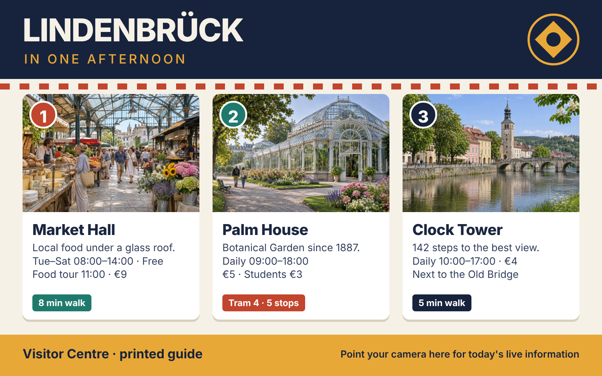
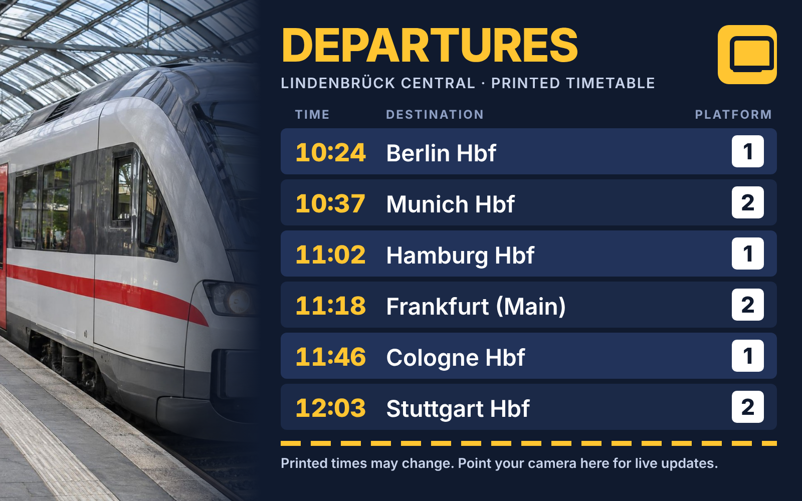
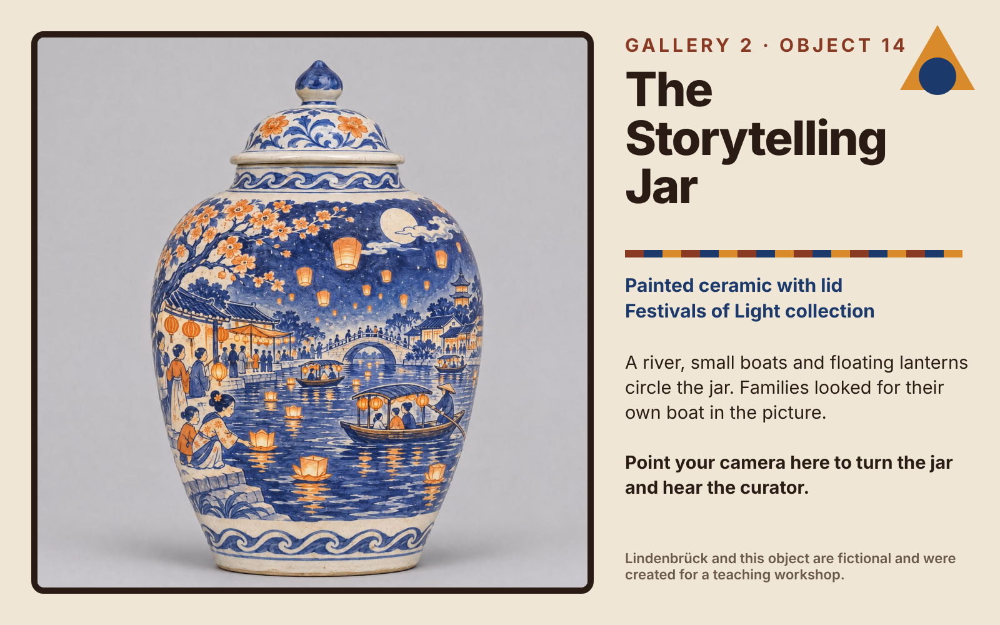

Print in colour on A4, landscape, at 100% scale, on matte paper. Lay each page flat in good light. Printing is optional: the targets also work on a second screen.
Print Show on screen instead

Target A · Augmented Tourist Brochure

Target B · Augmented Transport Information

Target C · Augmented Museum Object